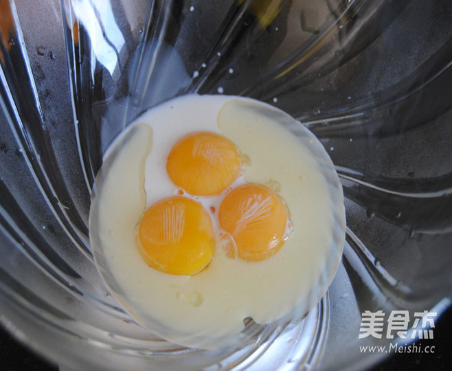
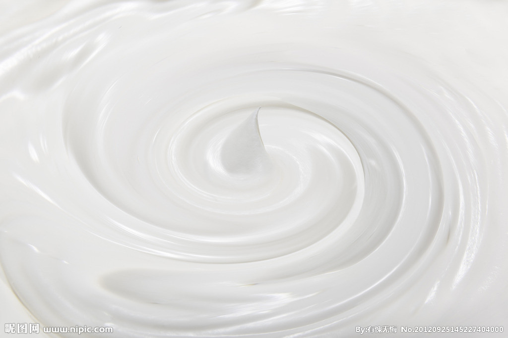
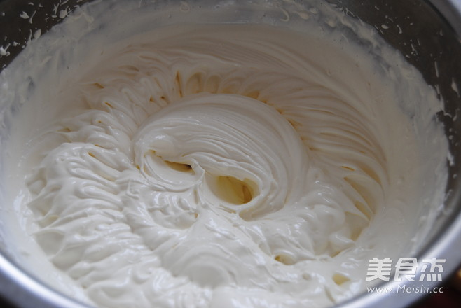
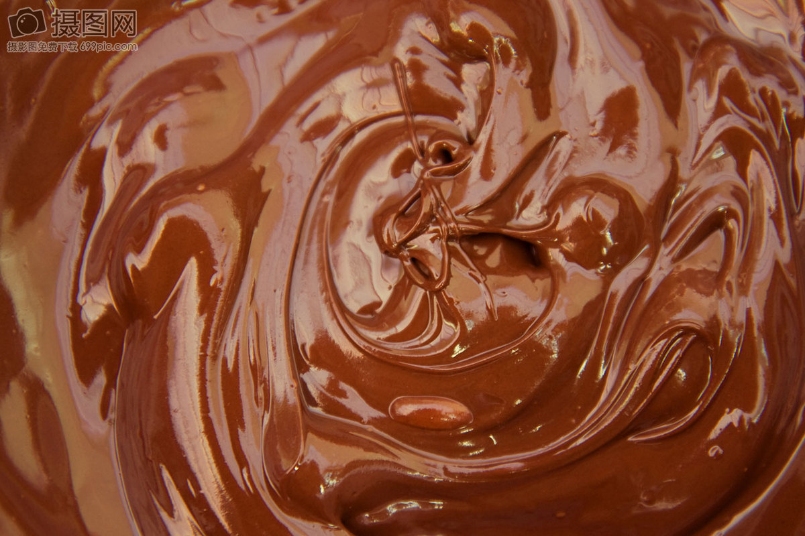
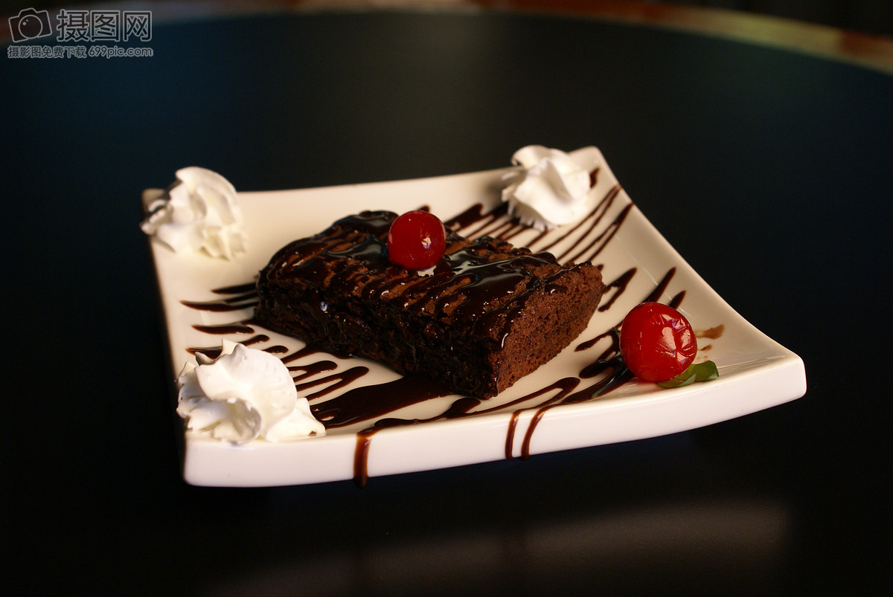

自制奶油巧克力蛋糕
没事喜欢自己做一些简单的甜品，给生活增添一些乐趣。 这是新做的奶油草莓蛋糕，味道还不错，和大家分享一下。 这么有个性的甜品相信你也一定想试试吧，云朵般轻盈的口 感，绝对不会让你失望的哦！
蛋黄蛋清分离，蛋黄加入纯牛奶和玉米油，打蛋器搅打均匀，筛入低粉
60克细砂糖分三次加入蛋清中打发，搅打至干性发泡，出现短小的尖角.
取1/3的蛋白加入蛋黄糊里拌匀倒入一个六寸和一个四寸的模具中，放入烤箱中下层150度烤制45分钟。
抹好奶油的蛋糕,放入冰箱冷藏30分钟以上80克淡奶油小火加热至冒小泡加入草莓巧克力搅拌融化即成巧克力。
用勺子勺出巧克力淋在蛋糕边缘上，让巧克力自然流下，再装饰上草莓即可。

小厨们的评论
G大调的悲伤16.11.21 17:00
回复世界从来不缺少美，缺少的是创造美的技能！当我们不断 站在甜品店蛋糕店抹口水的时候你是否想到，这些蛋糕也 是人们做出来的，为啥我们自己不阔以呢？看着就很有食 欲，自己试了试，虽然外观没有那么漂亮，但是味道还是 不错的。
瑶瑶：说的不错，我有时间也试试。
一只稻草人：人要不断尝试，不断进步。
查看全部评论彩虹直至黑白16.11.20 21:12
回复不要总是说美食都是大厨做出来的，其实我们自己在家也 可以做出各种美食。干净卫生，方便且美味。世界从来不 缺少美，缺少的是创造美的技能！当我们不断站在甜品店 蛋糕店抹口水的时候你是否想到，这些蛋糕也是人们做出 来的，为啥我们自己不阔以呢？看着就很有食欲，自己试 了试，虽然外观没有那么漂亮，但是味道还是不错的。
小檬：说的不错，我有时间也试试。
一只稻草人：人要不断尝试，不断进步。
查看全部评论